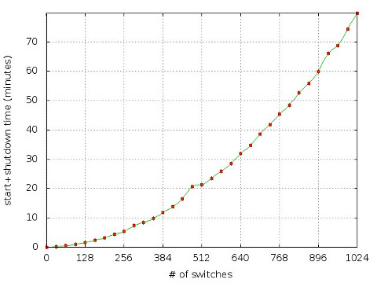

In the realm of software-defined networking, unless you own a data center as a play ground and have some serious amount of cash to spread over the technicians to program this infrastructure for you, you will inevitably meet with the mighty mininet. mininet is a rapid prototyping tool for emulating software-defined networks. At its core, it uses process-based virtualization and network namespace tricks in Linux kernel to create a virtual network composed of controllers, hosts and switches.
Recently for an experimental testbed, I needed to figure out how far can we go with mininet. That is, what is the maximum possible size of a virtual network that I can create using mininet and how long would it take to create it?
Before going into the details with the benchmark, first, let me share with you the server and software specifications of the deployment environment that mininet will be running.
| Server | IBM System x3650 M3 |
| Memory | 28 GB (4+3*8) |
| CPU | 6-core 2.40GHz Intel Xeon E5645 CPU |
| OS | Ubuntu 12.10 x86-64 |
| Kernel | 3.5.0-26-generic |
| mininet | 2.0.0d2 |
| Open vSwitch | 1.4.3 |
| OpenFlow Reference Implementation | 1.0.0 |
In order to benchmark mininet, I used a simple bash function as follows.
for n in 1 `seq 32 32 1024`; do
echo "n: $n"
echo -e "h1 free -m | grep ^Mem | awk '{print \"mem: \" \$3}'\nexit" | \
mn --topo=linear,$n 2>&1 | \
grep -E "^(mem:|completed in)"
doneFor varying sizes of n, this command lets mininet to
- create a virtual network composed of
nserially connected switches, - where a single host is attached to each switch and
- the switches are connected to a central controller.
Put another way, created network will have 2n+1 nodes (a central controller, n switches, n hosts) and 3n-1 links.
Deployed script measures two things: 1) the memory usage of the server right after starting the mininet, and 2) the time it takes to start and shutdown the mininet. Results are as follows. (See mininet-ovs.dat and mininet-ref.dat for raw results generated using Open vSwitch and OpenFlow reference implementation, respectively. Employed Gnuplot script plot.gnu is also shared.)


Timing numbers point out that as the number of switches increase, initialization of the whole network exposes a significant runtime overhead, regardless of the switch implementation that is used. That being said, OpenFlow reference implementation consumes a much less amount of memory compared to the Open vSwitch. On the other hand, this advantage of it should be taken with a grain of salt, because Open vSwitch is known to perform much better and supports many standards that are missing in the reference implementation. (For instance, I was once bitten by OpenFlow forwarding LLDP packets across switches, where it shouldn’t.)
To sum it up, while mininet is an awesome tool to compose and emulate software-defined networks, it has its own limitations on the size of the network. These basic benchmarks should hopefully give you an idea about mininet’s runtime and memory characteristics proportional with the number of switches.
Note: Thanks Bob Lantz for his suggestion on using the switch distributed with the OpenFlow reference implementation.